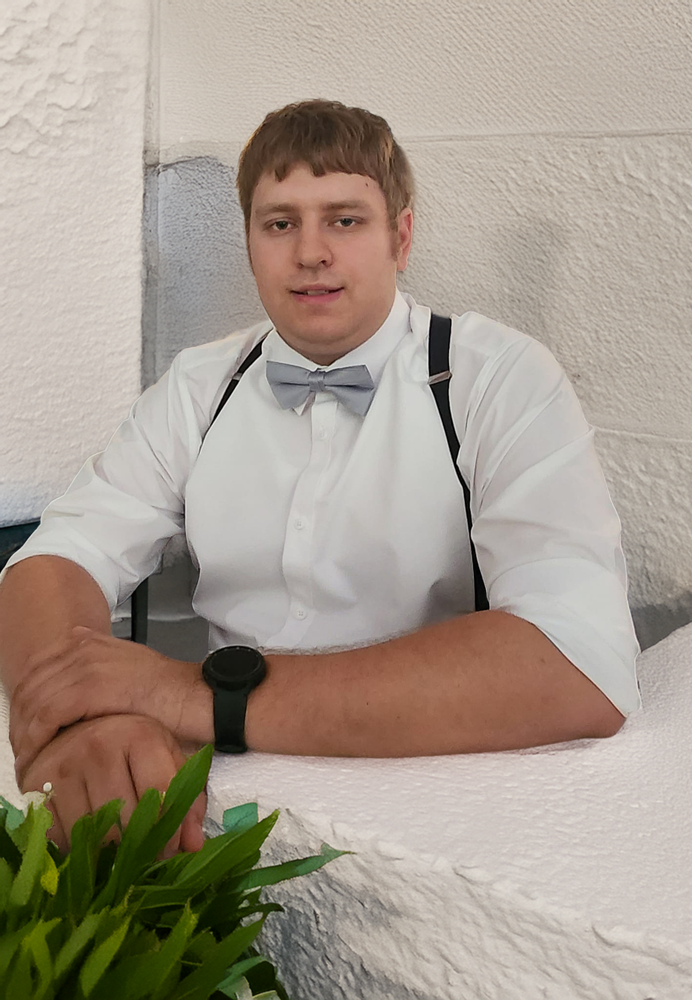

I’ve always been an avid gamer with a natural curiosity for how technology works.
That interest pulled me into the world of electronics early on, and it eventually led me to
pursue both IT Programming and Digital Media. I’ve always been more creative than technical, but
once I understand how something works — the “why” behind it — I pick things up quickly and enjoy
mastering new skills.
I’ve worked hands‑on with hardware, troubleshooting, and system prep, and
I’ve always loved digging into the inner workings of computers. Gaming sparked the interest, but
studying both the backend coding side and the front‑end design side helped me understand
technology from multiple angles. That blend of logic and creativity is what drives me.
Right now, I’m in the process of finding my next career opportunity after
being laid off due to lack of work. I still do freelance graphic design on the side — logos,
branding, and digital visuals — though I haven’t fully opened that door to the world yet. This
portfolio is actually one of the first coding projects I’ve taken on since graduating in 2019,
and it’s been exciting to get back into building things again. I’m still figuring out exactly
where I want to go next. I’d like to refresh my coding skills, and cybersecurity has always
seemed like a fascinating path. What I do know is that I want to keep growing technically and
creatively, and I’m ready to take on whatever comes next. Personality‑wise, I’m laid back, a
hard worker, and a bit shy at first — but once I connect with someone’s personality or humor, I
open up quickly. I work well with people, I stay calm under pressure, and I bring a mix of
creativity, curiosity, and problem‑solving to everything I do.